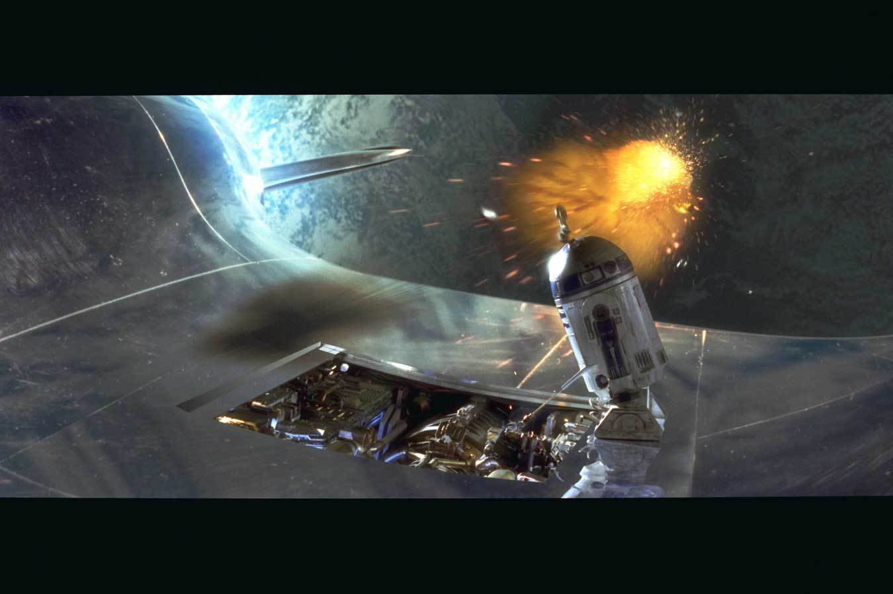
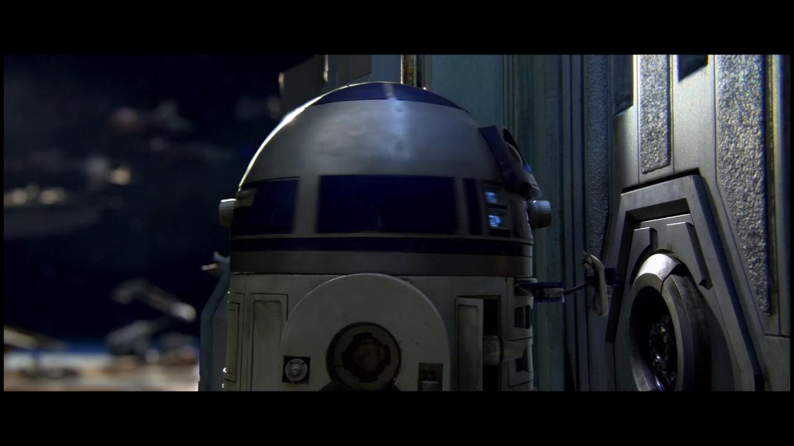
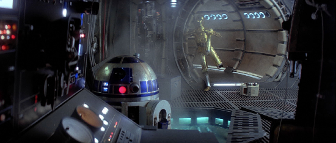

I genuinely believe that R2D2 is is a physical manifestation of the force sent to ensure that events unfold as planned. Have you ever taken the time to think about just how many times R2 saved the day? If not I hope this opens your eyes. If so, I hope you enjoy reading my take on why you're right.
In each of the first six Episodes, R2D2 saves the day at the last minute allowing our heros to escape and further the story we paid to see. Here's just one instance from each Episode where R2 guarantees that we, the viewers, get to see the full story of Anakin's growth as a Jedi, fall to the Darkside, and eventual redemption.
Early in Episdoe I we see R2 spacewalk on the outside of the Queen's Yacht to reapir the hyperdrive. If they had been destroyed while trying to run the Seperatist Blockade, Padme would have never been able to bring word of Naboo's plight to the Galactic Senate and she would have never met Anakin.
Here we see Padme in jeopardy because a giant bucket of lava is about to be dumped on her. Without R2's quick action to diable the machine, we would never have a Luke and Leia to finally bring and end to the Empire's reign.
The seperatists had trapped Anakin and Obi-wan but with a simple comm to R2 they were able to escape. Here we see R2 use his scomp link to access a simple socket in the back of a a docking bay to override the secure commands sent from the bridge to lock down the elevator.
Of all the possible places across an entire planet thier escape pod could have landed, the force was clearly guiding R2 to where it would meet the Jawas that would sell him to Owen Lars. That would set R2 up to bring both Luke and the message from Leia to Obi-Wan. Saving the day happens later when R2 manages to hack THE DEATH STAR to save our heros from being crushed in a trash compactor.
After escaping Cloud City, our heros discover that the hyperdrive on the Millennium Falcon is on the fritz. With only moments left until Imperial forces catch up, R2 sucessfully manages to fix what Lando, the ships former owner, couldn't.

R2 was basically the linchpin of Luke's whole, overcomplicated plan to rescue Han Solo from the vile gangster Jabba the Hutt. Managing to pretend to be reprogrammed for service to Jabba and managing to conceal a lightsaber in his head from anyone trying to inspect Jabba's "new property", no other astromech could handle a mission with this level of subterfuge.
If you'd like to learn more about current and future STAR WARS content, just click the logo below.